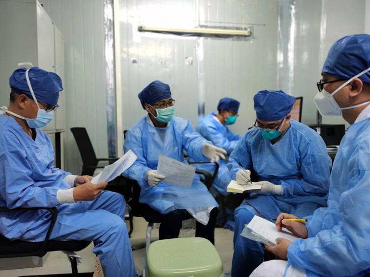

我在海外 | 身在英国的我，看清了首相约翰逊的防疫“真面目”
原文链接 备份链接 自疫情暴发以来，约翰逊出人意料地坚持走“科学”防疫路线。 文 | 赵 璧（上海外国语大学英国研究中心研究员） 北京时间3月23日晚，中国国家主席习近平同英国首相约翰逊通电话。约翰逊表示，英国疫情形势严峻，英方正在研究借 …
近日，国家中医药管理局医疗救治专家组副组长、国家援助湖北第二支中医医疗队队长、广东省中医院副院长张忠德，接受了人民网·人民健康的专访，为广大网友分享了许多中医药在此次抗击新冠肺炎疫情中的积极作用。
作为国家中医药管理局高级专家组成员，张忠德院长对此次中国防疫工作取得的重大成效表达出来了积极的态度，他认为，我们国家这一仗打得非常漂亮。

截至目前，中国的抗疫成果已连续多次获得国外媒体点赞。在这“漂亮一仗”的背后，中医药大规模参与一线抗疫，广泛且深入地介入到诊疗的全过程中，成为此次抗击疫情的一大特色。中西医结合治疗的独特方案，在抗击疫情中发挥了重要作用。
中医参与诊疗方案具备独特优势
作为《新型冠状病毒肺炎诊疗方案》制定的重要参与者，张忠德院长明确表示，中医参与，是中国诊疗方案的一大优势。中医药在里面起到越来越重要的作用，因为它的疗效是经过临床实践证明的。况且中国历史以来，中医药在防治这些新发突发疫病的治疗过程中，是有文献记载和历史渊源的。
在这次抗疫中，中医药对各种类型的病人皆有很好的疗效发挥。对于轻型和普通型患者，使用中医药治疗症状缓解非常迅速。而在应对重症方面，对重症患者身上出现的剧烈咳嗽，极度呼吸困难、发烧，以及胃肠道等症状，中医药也起到了非常好的改善作用。并且，它还可以帮助阻断普通病人向危重病方面发展，减少危重病人的死亡率，因此在抗疫一线得到了广泛应用，整个湖北，现在的中医药使用率已经达到了90%以上。

借鉴经典古方，定制中国特色诊疗方案
在讲解诊疗方案中医药配方时，张忠德院长表示，在多个修订版本的《新型冠状病毒肺炎诊疗方案》中，中医治疗部分前后引用的古方多达七个，而诊疗方案给出的中医药配方，正是从这些中国传统中医药方中得到借鉴，在原方基础之上，结合本次疫情的具体情况，重新组合形成的，这也为诊疗方案增添了更多的中国特色。
这七大特色组方有“清肺排毒汤”、“麻杏石甘汤”、“麻杏苡甘汤”、“达原饮”、“附子理中汤”、“五味消毒饮”、“炙甘草汤”等，每个都出自经典传统医学典籍，具有悠久的历史。
比如“达原饮”，载于明代中医吴又可的医学著作《温疫论》中，有《瘟疫论》中第一方之称。“达原饮”在历史上的数次抗疫中发挥了重要作用。该方由槟榔、厚朴、草果等七味药组成，具有“开达膜原，辟秽化浊”之功效，可治湿热中阻，行气去邪。“槟榔”贵为本方中的“君药”，是方中“主力”，具有破气杀虫，祛痰逐水的功效。相传，清乾隆四十四年，湘潭县境大疫，当地居民多犯臌胀病，当地的县令便是让患者嚼食槟榔来治疗瘟疫。张忠德教授也表示，槟榔这个药，行气，很多时候，病人中焦气结，湿气重，结在里面了，槟榔祛湿的同时，可以把它行气破掉。
比如“炙甘草汤”，出自医圣张仲景的医学巨著《伤寒论》。该方由甘草、生姜、人参等药材组成，具有益气滋阴，通阳复脉之功效。主治阴血阳气虚弱，心脉失养证。方中的各味药材，都各自具有针对性的功效。张忠德介绍其中的“人参”可以起到补气、扶正、驱邪的功效。
分享战疫经验，让世界更了解中医
采访中，张忠德院长表示，“病毒是无国界的，我们非常希望中国独特的方案，能够帮助其他国家战胜疫情。”
从援助伊拉克，贡献防疫物资，再到支援意大利、派驻顶级专家团，给各国介绍第七版诊疗方案，并带去宝贵的临床经验……在全球抗击新冠疫情的问题上，中国从始至终毫无保留。
尽早战胜疫情，是当下全人类所面临的共同挑战，也是当前全球的头等大事。我们也希望，中国积累的丰富临床经验、优秀的中医疗法，能够为世界战胜疫情做出更多的贡献。
也希望中医可以在更大范围内得到推广，让世界更了解中医，为世界的健康卫生事业，做出更大的贡献。
原文链接 备份链接 自疫情暴发以来，约翰逊出人意料地坚持走“科学”防疫路线。 文 | 赵 璧（上海外国语大学英国研究中心研究员） 北京时间3月23日晚，中国国家主席习近平同英国首相约翰逊通电话。约翰逊表示，英国疫情形势严峻，英方正在研究借 …
原文链接 备份链接 【财新网】（记者 周东旭）随着湖北省疫情逐步得到控制，新增病例多日零增长，全国援助湖北的医务人员也陆续开始分批撤离。自3月17日开始，截至3月20日已经撤离1.2万人。 抗疫援鄂英雄归来，全国各地的迎接也是颇为用心。多 …
原文链接 备份链接 很多网友吐槽“英式抗疫”，大多源于对国情、文化、民众心理以及医疗体系的不理解。 “群体免疫”在世界各地炸了锅后，英国卫生大臣马修·汉考克回应：大众对“群体免疫”断章取义了，这不是英国政府的目标或者政策，这是一个科 …
原文链接 备份链接 记者：潘金花 “ 自1959年卡斯特罗革命成功以来，古巴政府就一直在大力发展公共医疗，努力培养医护人员。如今，古巴不仅搭建起了全民免费医疗的制度，其全国人均医生数量也位居世界前列，多个领域的医疗技术更是达到了世界先进水 …
原文链接 备份链接 【财新网】（记者 萧辉）“武汉新增确诊病例0例，武汉新增疑似病例0例，武汉现有疑似病例0例。武汉三个0，金光闪闪。”3月19日，叶青难掩激动的心情，在他的武汉日记中写道：武汉迎来了三个0。武汉保卫战注定会载入中国的历史 …